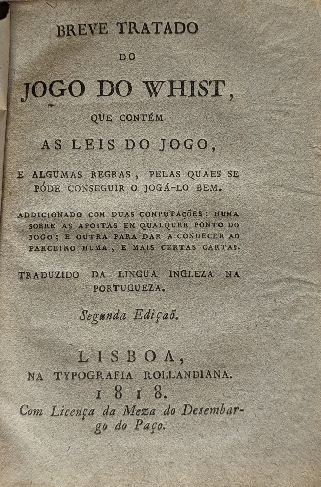

A Descriptive Bibliography of Edmond Hoyle
Copyright © 2014-26 by David Levy
(page updated 2023-11-30)User Guide
Whist.Pt.4
Breve Tratado do Jogo do Whist, Na Typografia Rollandiana, fourth edition, “segunda ediçaõ”, 1818.
 |
Title: | BREVE TRATADO | DO | JOGO DO WHIST, | QUE CONTÉM | AS LEIS DO JOGO, | E ALGUMAS REGRAS, PELAS QUAES SE | PÓDE CONSEGUIR O JOGÁ-LO BEM . | ADDICIONADO COM DUAS COMPUTAÇÕES : HUMA | SOBRE AS APOSTAS EM QUALQUER PONTO DO | JOGO ; E OUTRA PARA DAR A CONHECER AO | PARCEIRO HUMA, E MAIS CERTAS CARTAS. | TRADUZIDO DA LINGUA INGLEZA NA | PORTUGUEZA. | Segunda Ediçaõ. | LISBOA, | NA TYPOGRAFIA ROLLANDIANA. | 1818. | Com Licença da Meza do Desembar-|go do Paço. |
| Collation: | 8o: A–F8 G4 [$1–2 signed]; 52 leaves, pp. [1–3] 4 [5] 6–104 |
| Contents: | Signature (Page) Reference | Contents | Signature (Page) Reference | Running Titles |
| A1r (1) | title | |||
| A1v (2) | blank | |||
| A2r–A2v (3–4) | ‘A QUEM LER. | [...]’ | |||
| A3r–G4v (5–104) | ‘[rule] | BREVE TRATADO | DO | JOGO DO WHIST. | [...]’ |
| Publisher: | Rollandiana |
| Translator: | Luiz de Vasconcellos Botelho |
| Copies Seen: | Levy [1776] |
| Other Copies: | LB [S.A. 12377 P.]; TNMS [1094]; CtY-BR [1984 430] |